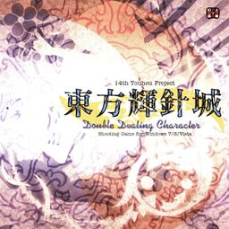

- Welcome to Touhou Wiki!
- Please register to edit. For assistance, check in with our Discord server or IRC channel.
Double Dealing Character
Double Dealing Character | |
|---|---|
|
 | |
| Developer | |
| Publisher | |
| Released |
Trial: May 26, 2013 (Reitaisai 10) |
| Genre |
Vertical Danmaku Shooting Game |
| Gameplay |
Single-Player Story Mode |
| Platforms | |
| Requirements |
|
Touhou
It is the first game in the series to be made available for digital download, through Playism. This release is also the first available in western territories, though it is untranslated from the original Japanese.
Contents
Gameplay[edit]
Double Dealing Character resembles Ten Desires with the overall package, but with a visual upgrade due to doubling the resolution. ZUN focused on simpler gameplay for this entry, which results in a game that brings to mind the Embodiment of Scarlet Devil or Subterranean Animism in simplicity.
The three main playable characters are Reimu Hakurei, Marisa Kirisame, and Sakuya Izayoi, each of which have two different shot types. Like with recent previous games, lives and bombs are gained piece by piece. The player requires 3 life pieces to gain an extra life. 8 bomb pieces grants the player an additional bomb, and this amount never changes. Bosses may also drop bomb or life pieces.
The major new gameplay mechanic is a simple upgrade to the Item Get auto-collection system. When you auto-collect, either by passing the Item Get Border Line, using a bomb, or reaching/defeating a boss, you will get bonus points and resource pieces based on the amount of power and point items auto-collected within a certain timing window. You get bomb pieces at 20 items and life pieces at 60, though every fifth bomb piece is replaced with another life piece.
Returning from Ten Desires is Spell Practice mode, as well as the ability to unlock a stage for Practice mode simply by reaching it. Not returning is having to beat Normal difficulty to unlock the Extra Stage.
Story[edit]
Youkai are rebelling, and tsukumogami are turning up; no one knows what's happening, clouds are gathering, and a strong wind carries the sounds of a huge building. Gensokyo is full of the sounds of dissonance. The individual weapons of the three protagonists are starting to act oddly. It's their job to either take their weapons in hand and fight the youkai, or to cast their weapons aside.
Press[edit]
Double Dealing Character was first announced on ZUN's personal blog on May 11, 2013, along with a short explanation of the gameplay, confirmation on the playable characters and five in-development screenshots. It also included a basic story outline.[1] On July 19, 2013, ZUN updated his blog announcing that the web demo was available for download in the official Team Shanghai Alice page with minor bug fixes along with a short intro story.
In his original blog announcement, ZUN stated that the resolution of the game would be doubled from 640×480 to 1280×960. He also said that the game was being developed to be resolution-independent, but that those with higher-end computers would be able to enjoy the higher resolution.
Four days after the release of the full game at Comiket 84, ZUN released a v1.00b patch to fix bugs, such as the crash that happened with certain characters after stage 4.
On August 10, 2014, both ZUN and Playism confirmed a digital download for the game, available on the site of Playism.[2][3]
On April 7, 2015, Playism announced that it would bring the game to western territories.[4] The release date was later announced for May 7.[5]
Music[edit]
Double Dealing Character has a total of 17 tracks composed by ZUN, with seven stage and seven boss themes, a title screen theme, an ending theme and a staff roll theme. A hidden track 18 is the new Player's Score theme from Fairy Wars.
Just like the other Windows games, the title screen theme is based on "Theme of Eastern Story". Additionally, the stage 3 theme "Bamboo Forest of the Full Moon" and the stage 4 boss theme "Illusionary Joururi" also adapt the melody from this theme. Later on, Seija Kijin's theme "Reverse Ideology" was re-used for the official trailer for Impossible Spell Card as well as in the game itself. Two other themes ("Mermaid from the Uncharted Land" and "Illusionary Joururi") are also present in said game.
English patch[edit]
Touhou Community Reliant Automatic Patcher / THCRAP
- Community translations from the Touhou Patch Center wiki.
- Select lang_en during patching.
- Video walkthrough
- Also available as a pre-packaged standalone (not recommended).
These patches are a community translation based on Touhou Wiki and the English Touhou Patch Center Portal.
Visit the thpatch game page to find the specific patch contents for Double Dealing Character.
External Links[edit]
Official[edit]
- Double Dealing Character official website (Japanese)
- Double Dealing Character web trial v0.01b download
- Double Dealing Character Patch 1.00b
- Playism Double Dealing Character website (English)
Unofficial[edit]
- Windows XP compatibility patch for 1.00a. Only necessary for v1.00a, v1.00b natively works on Windows XP.
- Static translated version of custom.exe
Notes[edit]
- ↑ 1.0 1.1 ZUN (11 May 2013). "東方Project 第14弾の情報です". Invisible Games and Japanese (in 日本語). Team Shanghai Alice. Retrieved 10 May 2013. Unknown parameter
|trans_title=ignored (help) - ↑ https://twitter.com/korindo/status/498700083521536001
- ↑ https://twitter.com/playismJP/status/498698271666106369
- ↑ http://playism-games.com/article/touhou-finally-coming-to-the-west
- ↑ http://playism-games.com/article/touhou-14-hits-playism-on-5-7-2015
| |||||||||||||||||||||||||||||||||||||||||||||||||||||
| |||||||||||||||||||||||||||||